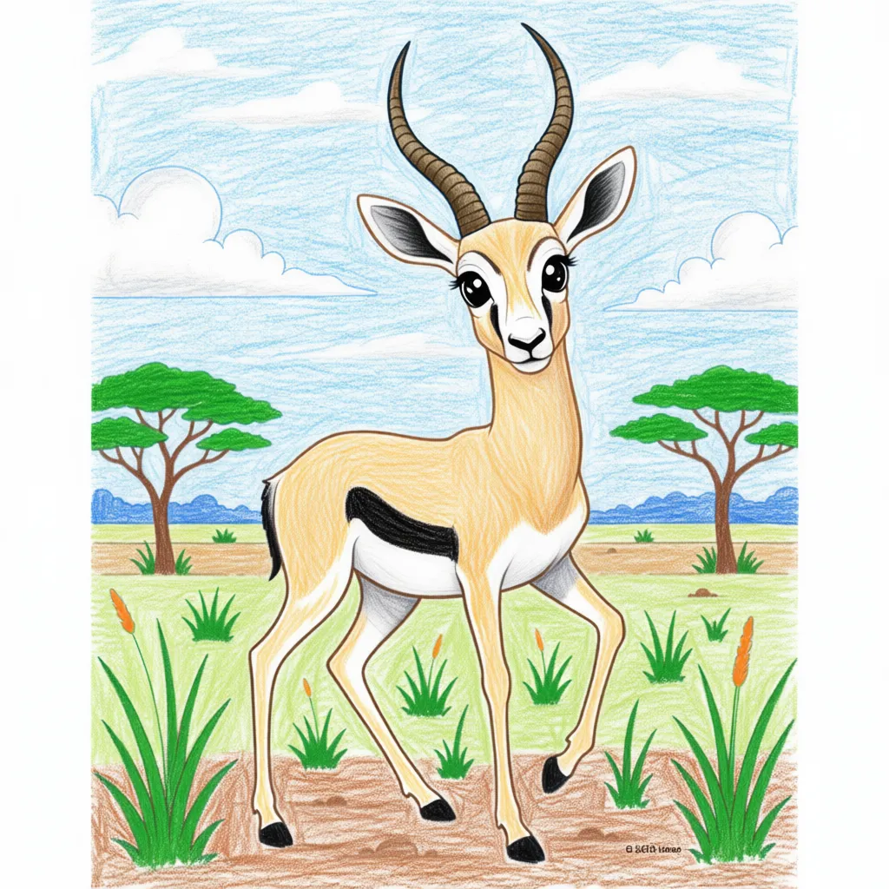

Thomson's Gazelle
Eudorcas thomsonii

Key Characteristics
- Gazelles are small, graceful antelopes known for their incredible speed and agility.
- They have a distinctive black stripe running along their side, separating their light brown back from their white tummy.
- When a gazelle senses danger, it performs a peculiar, bouncing run called 'stotting,' leaping high into the air with all four feet.
Peculiar Facts (Fun Facts!)
- A Thomson's Gazelle can run up to 40 mph (64 km/h) in zigzags to escape a Cheetah!
- The stotting jump might be a signal to predators that the gazelle is healthy and too fast to catch.
- They can survive for a long time without drinking water, getting all the moisture they need from the plants they eat.